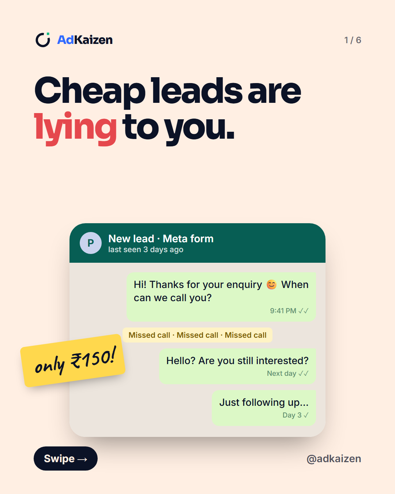
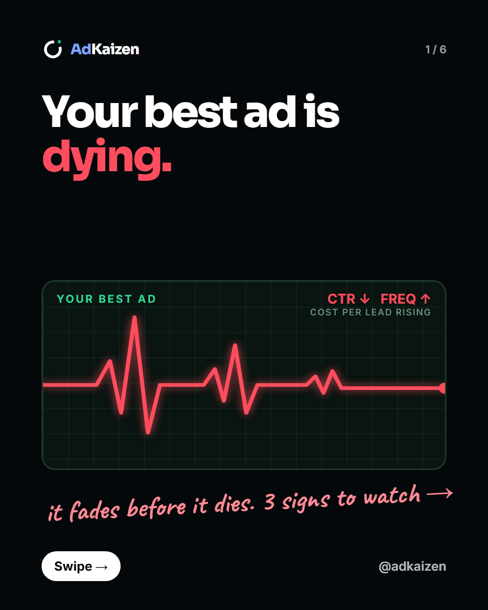
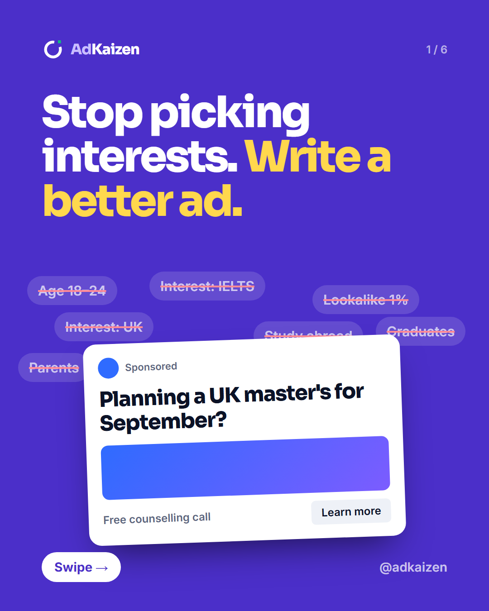
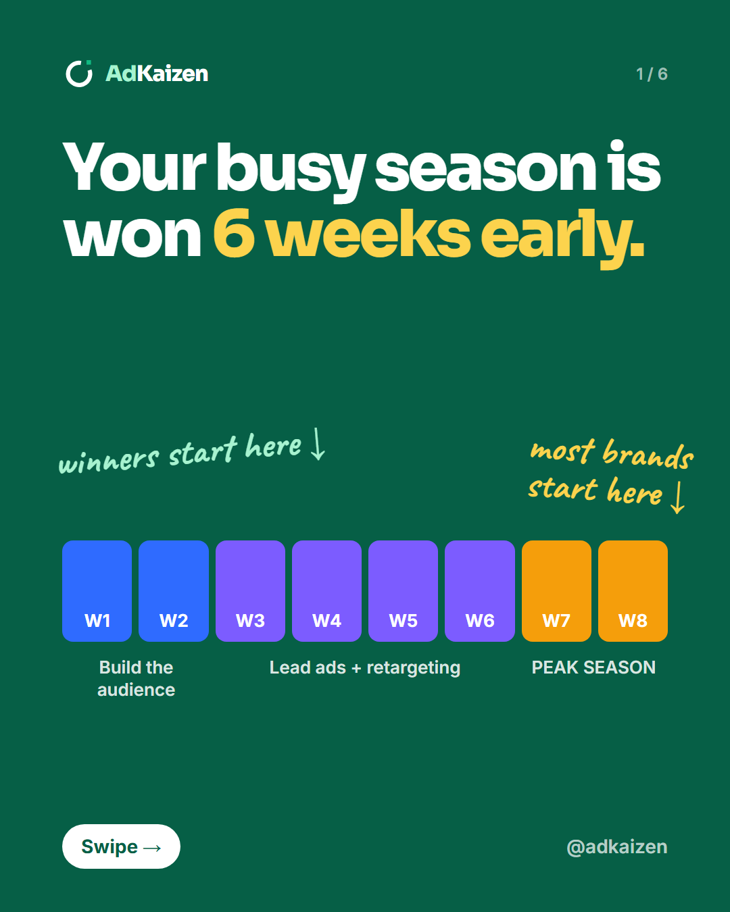

Everything to set up the profile, then the first 10 posts with dates. Tick each post when it's live; your ticks are saved in this browser.
2 posts a week10:00 AM ISTTue 1 Dec → Thu 31 Dec
1. Update the profile
Fill these in, top to bottom. Use Copy to paste each one.
Page name
AdKaizen
Public URL
linkedin.com/company/adkaizen-agency
Already set.
Tagline (max 120 characters)
Performance marketing & lead generation for India & the GCC. Growth that compounds, not guesswork.
Website
https://thedigitalkaizen.github.io/Kaizen/
Change to adkaizen.in once you buy the domain.
Industry
Advertising Services
Company size
2-10 employees
Company type
Privately held
Overview (About)
AdKaizen is a performance marketing and lead generation agency for brands in India and the GCC.
Kaizen means continuous improvement. We run every account as a weekly test-and-improve loop: tested changes every week, keeping what lowers your cost per lead and dropping what doesn't. Small gains, stacked, so results compound.
What we do:
• Meta Ads (Facebook & Instagram)
• Google Ads (Search, Performance Max, YouTube)
• SEO
• Lead generation and landing pages
• AI automation for faster lead follow-up
Who we work with: education and study abroad, travel and Umrah, food and D2C brands, and other businesses that need a steady flow of qualified leads.
Book a free 30-minute strategy call. You'll leave with the top 3 fixes for your ad account, in writing, whether or not you work with us.
Specialties (add one by one)
Performance Marketing, Meta Ads, Google Ads, SEO, Lead Generation, Landing Pages, Marketing Automation
Tuesday and Thursday mornings, when business owners check LinkedIn before the day gets busy (8:30 AM in Dubai). Times are a starting point: after 4 weeks, check the platform's insights and move to when your followers are actually online.
Ready to copy. Every claim is about how AdKaizen works, with no made-up results.
1One tested change a week · ★ pin thisTue 1 Dec, 10:00 AM ISTText
Your ads don't need a rebuild. They need one tested change a week.
When results dip, the instinct is to tear everything down. New campaigns, new strategy, sometimes a new agency. And with it goes everything that was quietly working.
We run every account the Kaizen way:
→ Find the one change most likely to lower your cost per lead
→ Test it for a week against what's running now
→ Keep the winner, drop the loser
→ Repeat
One change a week sounds slow. Over a quarter that's 12 tested improvements, stacked on top of each other.
That's how growth compounds instead of resetting every few months.
What's the one change you'd test first in your account?
#PerformanceMarketing #MetaAds #GoogleAds #LeadGeneration #Kaizen
Image to attach:instagram-carousels\01-one-test-a-week\
2Cheap leads vs good leadsThu 3 Dec, 10:00 AM ISTText
A cheap lead that never picks up the phone is the most expensive lead you'll buy.
Cost per lead is the number everyone watches. It's also the easiest number to fake.
Loosen the targeting, use a one-tap instant form, and CPL drops overnight. So does the number of people who actually answer your call.
What we track instead:
• Cost per qualified lead (picked up, right fit, real budget)
• Cost per booked call or visit
• Cost per sale, where we can see it
A ₹600 lead that converts beats a ₹150 lead that ghosts you. Every time.
Which number does your agency report to you?
#LeadGeneration #PerformanceMarketing #MarketingStrategy
Image to attach:

instagram-carousels\02-cheap-leads\
3Reply to leads fastTue 8 Dec, 10:00 AM ISTText
You paid for the lead. Then you replied the next morning.
Speed to lead is the cheapest growth lever most businesses ignore.
Someone fills your form at 9:40pm. They're still on their phone, still interested, still comparing you with two competitors. The first business that replies usually gets the conversation.
What we set up for clients:
→ An instant WhatsApp or email reply the moment a lead comes in
→ An alert to the sales person's phone
→ A simple rule: call within 5 minutes during working hours
No extra ad spend. Just fewer paid leads going cold.
How fast does your team reply to a new lead today?
#SalesProcess #LeadGeneration #MarketingAutomation
Image to attach:instagram-carousels\09-reply-fast\
4Creative fatigueThu 10 Dec, 10:00 AM ISTText
Your best ad is already dying. You just can't see it yet.
Every ad wears out. The same people see it again and again, stop noticing it, and your cost creeps up week by week.
The signs:
• Frequency climbing
• Click-through rate sliding
• Cost per lead rising with no change to targeting
The fix isn't a brand-new campaign. It's a steady creative pipeline:
→ New hooks on the same winning offer
→ New formats (video, carousel, static)
→ One fresh test going live every week
Creative is the targeting now. Feed it.
#MetaAds #CreativeStrategy #PerformanceMarketing
Image to attach:

instagram-carousels\03-dying-ad\
5Landing page, not homepageTue 15 Dec, 10:00 AM ISTText
Stop sending paid traffic to your homepage.
Your homepage is built for everyone: about us, services, careers, blog, contact.
An ad visitor came for one thing. Give them a page with one thing on it.
A good ad landing page has:
• The same promise as the ad, word for word
• One clear action (call, WhatsApp, or a short form)
• Proof right next to the button
• Nothing else to click away to
Same budget, same ads, a better page. It's often the fastest win in an account.
Where do your ads land right now?
#LandingPages #ConversionRateOptimization #PerformanceMarketing
Image to attach:instagram-carousels\04-landing-page\
6Fix tracking firstThu 17 Dec, 10:00 AM ISTText
If you can't see which ad brought the sale, you're not scaling. You're guessing.
Before we spend a rupee more on any account, we check the tracking:
✓ Meta Pixel and Conversions API sending the right events
✓ Google Ads conversions counting leads, not page views
✓ GA4 set up so you can compare channels fairly
✓ Every lead in the CRM tagged with where it came from
It's the least exciting part of marketing. It's also what decides whether more budget makes more money or just more noise.
When did someone last check your tracking?
#Analytics #GA4 #MetaAds #GoogleAds
Image to attach:instagram-carousels\10-fix-tracking\
7Broad targeting + better creativeTue 22 Dec, 10:00 AM ISTText
The best targeting setting on Meta today is a better ad.
A few years ago, winning on Facebook meant finding the perfect interest stack.
Today Meta's algorithm finds buyers better than most manual targeting, but only if you tell it clearly who your ad is for. And the way you tell it is the creative.
What we do instead of 30 narrow audiences:
→ Fewer, broader ad sets
→ Ads that call out the customer in the first line ("Planning a UK master's for September?")
→ Several creative angles, so the algorithm can find who responds
Your ad is your targeting. Write it like it.
#MetaAds #FacebookAds #DigitalMarketing
Image to attach:

instagram-carousels\05-meta-targeting\
8Negative keywords on GoogleThu 24 Dec, 10:00 AM ISTText
Half of your Google Ads budget might be buying searches you'd never want.
Search ads show for what people type, not just your keyword list. Open the search terms report in most accounts and you'll find things like:
• "free" and "jobs" searches
• Competitor names you don't want to pay for
• Locations you don't serve
Every one of those clicks costs money.
Our weekly Google Ads routine:
→ Read the search terms report
→ Add negatives for anything irrelevant
→ Move the money to the searches that actually convert
Boring. Effective. Every single week.
#GoogleAds #PPC #SearchMarketing
Image to attach:instagram-carousels\06-negative-keywords\
9Plan around your seasonTue 29 Dec, 10:00 AM ISTText
Your busy season is won 6 weeks before it starts.
Study-abroad intakes, Umrah and Ramadan travel, wedding and festive catering. Every industry we work with has a season.
The mistake: switching on ads when the season starts, competing with everyone at peak prices.
What works better:
→ 6–8 weeks before: build the audience with useful content and video
→ 3–4 weeks before: start lead ads and retarget that audience
→ Peak: push budget into what's already proven
→ After: follow up the leads who weren't ready yet
When does your season start, and when do your ads?
#MarketingPlanning #EducationMarketing #TravelMarketing #GCC
Image to attach:

instagram-carousels\07-plan-your-season\
10Free strategy call offerThu 31 Dec, 10:00 AM ISTText
In 30 minutes, we'll tell you the 3 things we'd fix first in your ad account.
No pitch deck. No 40-slide proposal.
Our free strategy call is simple:
1. You show us your account and your last month's numbers
2. We look for the biggest leaks: tracking, targeting, creative, landing page, follow-up
3. You leave with the top 3 fixes, in writing, whether or not you work with us
We work with brands in education, travel, food and more across India and the GCC.
Book a slot. The link is in the comments.
#PerformanceMarketing #LeadGeneration #FreeAudit
Image to attach:instagram-carousels\08-free-strategy-call\
5. Tips for LinkedIn
Post from the company page only. Don't share these on your personal profile while you're at Akbar.
Put the website link in the first comment, not in the post. LinkedIn shows posts with links to fewer people.
Reply to every comment within the first hour. That is when LinkedIn decides how far to push the post.
Add 1 image to text posts when you can: a carousel slide works well.
Invite connections to follow the page (Admin tools → Invite to follow). You get free invite credits every month.
6. After Thu 31 Dec
Once the 10 drafts are done, keep the same rhythm. Rotate: 1 how-we-work post, 1 mistake-and-fix post, 1 industry post (education, travel, food). When you have client permission, add a short case study with real numbers only.
AdKaizen · +91 76664 59020 · Website: thedigitalkaizen.github.io/Kaizen (switch to adkaizen.in once live)